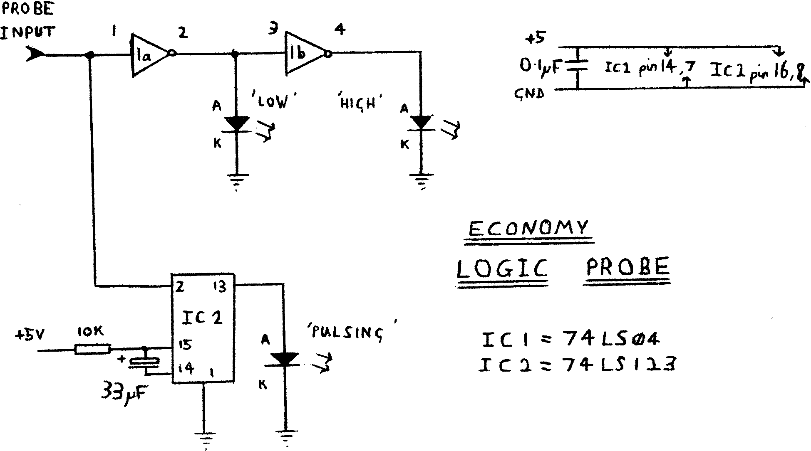

80-Bus News |
November–December 1984 · Volume 3 · Issue 6 |
| Page 41 of 55 |
|---|
Recently, while debugging a new board for my beloved Nascom 2, I needed to test the outputs of some chips in a manner that really required a logic probe. As the cheapest probe I could find was a £12 kit in an old Technomatic catalogue, and there was no way I would spend that kind of money if I could help it, I set about designing my own.
Now, I don’t know what they mean by all the “pulse train” stuff that they go on about in adverts, but my little probe costing 70p (roughly) has seen extensive use, and done everything that I have needed it to.
The probe has a display of three LEDs, which are used to show a high logic level, a low logic level, and a pulse. A single pulse (e.g. the /RESET line) will cause the “pulsing” LED to light for about a quarter of a second. A series of pulses (e.g. the CLOCK line) will cause the LED to light brightly. This gives a far clearer indication of what’s going on, than trying to judge the brightness of a dimly lit LED.
I constructed my probe on a piece of vero-board, about 25 holes by 10 holes (2.5 inches by 1 inch), as this is a reasonable size to hold in the hand. The three LEDs were mounted at one end, in a line with the “pulsing” LED in the middle. At the other end I put the actual ‘probe’. This was simply a piece of single core wire, threaded through the vero-board a couple of times, to make it stick out in a suitably probe-like manner. Power leads are about 18 inches long, as this allows sufficient length to reach anywhere on my computer, and twisted together for convenience. Be certain to put a
| Page 41 of 55 |
|---|